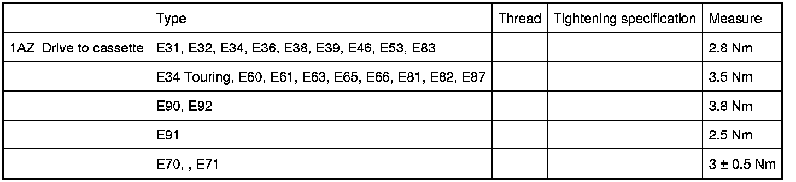

Operation CHARM
: Car repair manuals for everyone.
Home
>>
BMW
>>
2007
>>
X3 3.0si (E83) L6-3.0L (N52K)
>>
Repair and Diagnosis
>>
Specifications
>>
Mechanical Specifications
>>
Body and Frame
>>
Sunroof / Moonroof
>>
54 13 Electric Components (of Sun Roof)
54 13 Electric Components (of Sun Roof)
54 13 Electric Sun Roof Components
